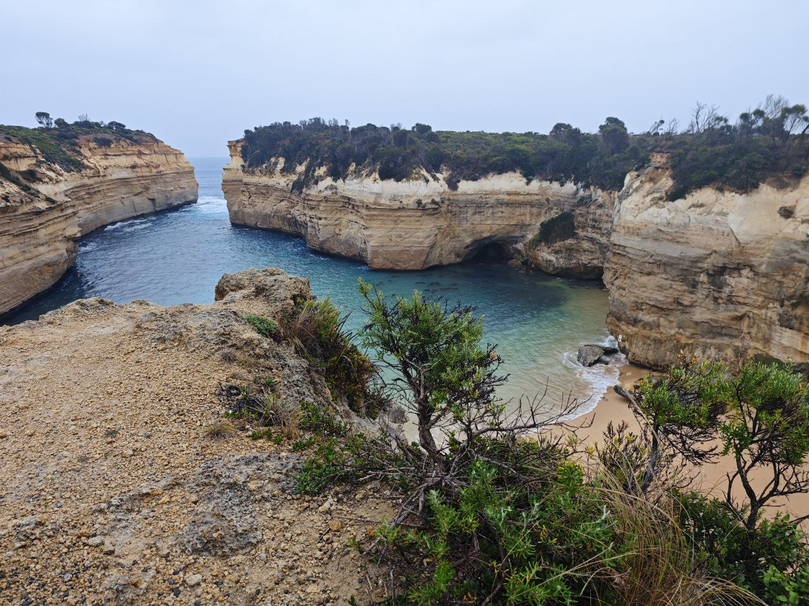

Exploring Great Ocean Road in July
The off-peak season drives many away with it's wet and windy weather, but holds many gems in return
The cold winter months are a deterrence for most who want to embark on Australia's longest coastal drive, but not for us Hans it's not! We were blessed with just the right amount of rain and shine to experience both the sunny coastal drive and the enchanting mist-shrouded forests (not to mention the rainbows!)
This was also our very first road trip so we were excited but also kinda confused (story of my life) but we chucked on the sunglasses, burst out some snacks and favourite tunes, and got a rollin!

Day 1: Departure from Melbourne to Apollo Bay
Stop #1: Torquay 11:00AM
A quaint little seaside town marks most people's first stop on the great ocean drive from Melbourne. It was a really charming place, and the smell of coffee from the cafes that lined the street wafted into the car as we looked around for lunch spots.
We eventually settled on Pond Cafe (after stalking Google Reviews of course) We ordered their signature big breakfast and some tacos(?)(honestly can't rmb what this was called but it was oOmph). Mom and bro ordered flat whites while I got their hot chocolate, delivered with some impressive latte art (Melbourne baristas never miss!)

 lovely mommyy~
lovely mommyy~
Stop #2: Great Ocean Road Entrance Sign Board 12:00PM
Making our way after lunch we passed by the iconic Great Ocean Road signage (so of course we had to stop for a selfie lol!)
"This sign signifies the start of the great ocean road coastal drive", was what was engraved on the monument located next to the sign. Apparently the road was paved by ex-WWII soldiers after the war ended and served as a way to provide employment to the many service men.

Drive #3: The great drive commences! 13:00PM
I couldn't pin point a specific favourite lookout because the best part of this drive was perhaps seeing the endless turquoise waters and mighty big cliffs stretch on and on as we played our favourite songs with the windows down. Stopped by to check out a few beaches too as the sun was starting to peak through the clouds. Caught a sneaky little rainbow from the corner of our eyes, and also a gloriously goldie came up and asked politely for some head pats (much obliged sir, much obliged)


Stop #4: Erskine Falls 15:00PM
A short drive up some curvy roads lead you to Erskine falls, a long waterfall enshrouded in rainforest. Mythical and magical indeed. At the entrance of the falls there's a lookout where you can see it from a far, but there is also a hiking path leading you to the base of the falls so of course I had to do that. My mom took one look and said "nope! meet you guys back at the car". Perhaps the wiser decision because it was quite the hike, but something about the silence and tranquility of nature always puts me in a good mood so I didn't mind. The climb back up though, now that was a challenge! I think at some point my bro said something like "it's been a good run, go on without me" which was hilarious but I couldn't tell if it was a joke or not O.O

On the way out we saw a giant tree stump, it was huge! It looked like the entrance to another dimension or maybe Bilbo baggin's hobbit hole! It was unfortunately neither :( or at least we couldn't unlock the secret portal.

Stop #5: Kangaroo hill! 17:00PM
After Erskine Falls, the next pit stop where most decide to stay the night would be either Lorne or Apollo Bay.
Sunset was soon encroaching so we knew we had to make our way to our stay at Apollo Bay soon. Along the drive we saw a hill covered in peculiar looking brown bunnies. "Those bunnies are huge!" my mom commented. Curious, we stopped to take closer look. Only to find that they weren't bunnies at all but kangaroos, tons of them, all over the hill. Above our heads the call of birds caught our attention as red and white parakeets landed on some trees nearby. I felt like I'd been thrown into a Disney movie, with nothing but nature and animals surrounding me. It was as if they'd invited me into their land, welcoming me to have a look but not encroach further.

Stop #6: Apollo Bay Dinner & Rest 19:00PM
For dinner we went to Pit Stop Bros, a retro-American diner with oh so sinful burgers, fries and milkshakes. Loved the playful aesthetic and the Guns & Roses pinball machine was a nice touch.
We stayed at Coastal Motel, that was an absolute steal at SGD$109 per night for a room for three. It was spacious and had all the amenities needed for a cozy stay. The staff were also extremely kind and helpful. Would definitely recommend for budget travellers looking to make the most bang for their buck!
Day 2: Redwoods, 12 Apostles, and home sweet home
;woke up to a sweet Sunrise at Apollo Bay :')

Stop #7: Otway National Park Redwood Forest 11:00
Starting off our second day, we headed to the redwoods These trees grow up to over 100m tall and were an absolute delight to marvel at. Staring up to the top of the trees really puts things into perspective, how small man is in the enormity of the earth and nature. I was almost brought to tears, definitely the highlight of the trip for me and a must go. This spot is often missed on many group tours and road trips because the area itself isn't that huge and is slightly out of the way. BUT I would say it is such a waste to miss out on this gem of a forest, so do stop by it if you can!

Stop #8: The 12 Apostles & Loch Ard Gorge 16:00PM
Ah yes, the spot that everyone comes for. The drive through the forest to the apostles was actually quite long and tumultuous and had left us quite tired by the time we reached. It was quite the rainy day as well, bringing a sort of mist around the whole area. Once we reached the spot I could only spot about six or eight of the apostles, not quite the twelve that they acclaimed of. Nonetheless, it was quite the marvel. The Loch Ard Gorge too! Surrounded by crystal blue, something about the rocks looked both royal and majestic.

Stop #9: Back to Apollo Bay for Dinner
Of course we couldn't end a trip on the Great Ocean Road without eating Fish & Chips! Like c'mon pfttt. And boy was it delicious
That marks the end of our very first road trip. As we returned the car my mom commented "Well, I think this has been just the best trip ever"
I couldn't agree more ^^
peace out Great Ocean!